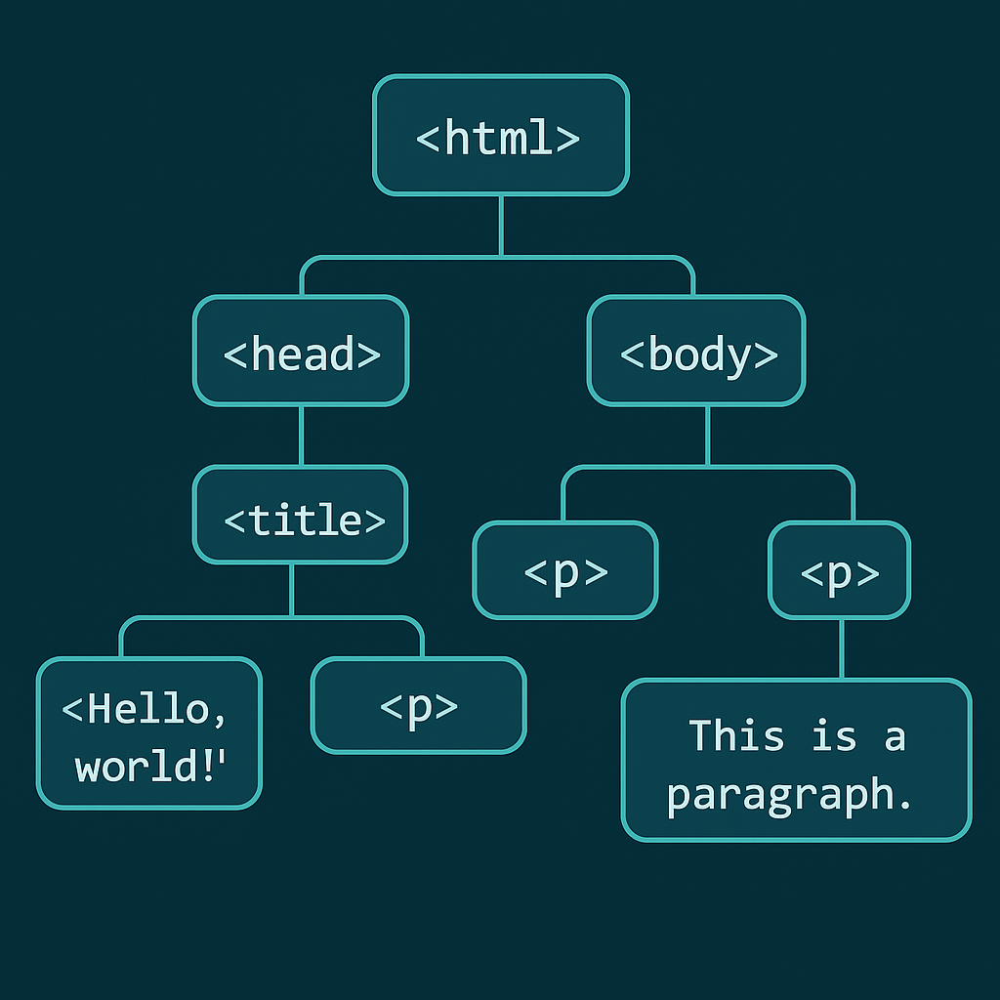

El Document Object Model (DOM) es una interfaz de programación para los documentos HTML y XML. Representa la estructura del documento como un árbol de nodos, donde cada nodo es una parte del documento (etiquetas, atributos, texto, etc.).
El DOM permite a los desarrolladores crear páginas web interactivas y dinámicas, ya que se puede acceder y modificar cualquier parte del documento con JavaScript. Es fundamental para la manipulación de eventos, validación de formularios, creación de efectos dinámicos y construcción de aplicaciones web modernas.
Cuando recorremos un árbol, hablamos de padre cuando nos referimos a un nodo superior, y de hijo si hablamos de un
nodo inferior. En el ejemplo típico, el elemento <body> tiene cinco hijos: <header>, <nav>,
<section>, <aside> y <footer>, que son hermanos entre sí. Además, el padre de
<li> es <ul>.
El DOM proporciona funcionalidades para recorrer el árbol del documento y acceder a los nodos para crear efectos dinámicos:
parentNode: proporciona el nodo padre.childNodes: proporciona el conjunto de nodos hijos (como array).firstChild: accede al primer nodo hijo.lastChild: accede al último nodo hijo.previousSibling: devuelve el nodo hermano anterior.nextSibling: devuelve el nodo hermano siguiente.
<ul>
<li id="miLI">Coffee</li>
<li>Tea</li>
</ul>
<script>
var x = document.getElementById("miLI").parentNode.nodeName;
// x tendrá el valor "UL", el padre del nodo li
</script>
Para acceder a los elementos del DOM, el objeto document utiliza varios métodos:
getElementById(): accede a un elemento por su atributo id.getElementsByTagName(): devuelve todos los elementos que coinciden con una etiqueta específica.getElementsByName(): devuelve todos los elementos con el atributo name especificado.
<button onclick="funcion()">Púlsame</button>
<p id="demo"></p>
<script>
function funcion() {
document.getElementById("demo").innerHTML = "Hola Mundo";
}
</script>
Podemos modificar el contenido o atributos de los elementos HTML usando:
innerHTML: cambia el contenido HTML de un elemento.setAttribute(atributo, valor): modifica atributos específicos.elemento.atributo = valor: cambia un atributo directamente.elemento.style.propiedad = estilo: modifica el estilo CSS directamente.
<button onclick="funcion()">Púlsame</button>
<p id="demo"></p>
<script>
function funcion() {
document.getElementById("demo").innerHTML = "Hola Mundo";
}
</script>
Es posible agregar eventos directamente mediante JavaScript con:
document.getElementById("miBoton").onclick = function() {
// código que se ejecuta al hacer clic
};
La siguiente imagen muestra cómo se representa una estructura HTML básica en el DOM:
